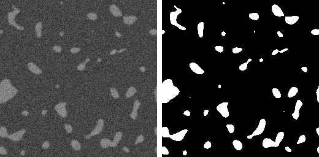
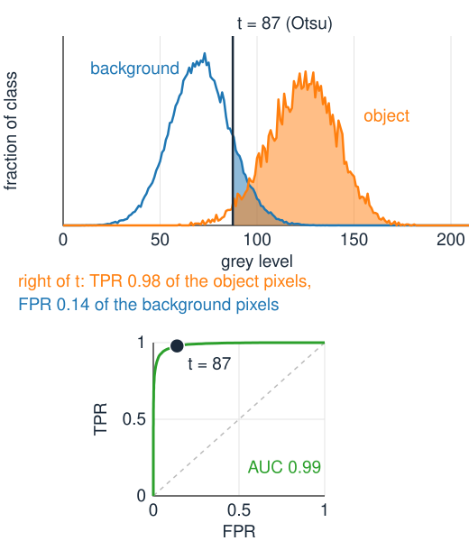
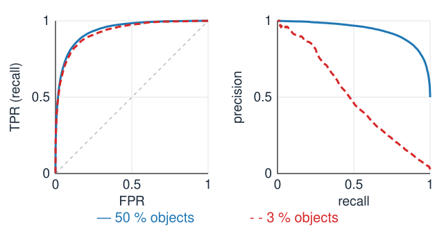
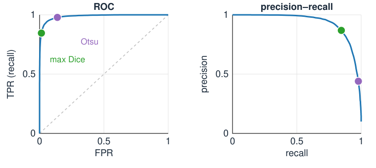
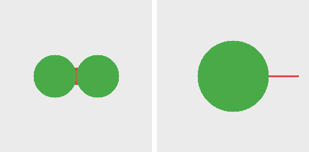

Is the segmentation good? Evaluation against ground truth
Image analysis
About this lecture
Three units produced masks. Which one is good? Compare it, pixel by pixel, with the ground truth.
The confusion matrix: true and false positives and negatives.
Precision, recall, false-positive rate, and why accuracy misleads when objects are rare.
Dice and Jaccard: one number for the overlap.
Sweep the threshold: the ROC and precision–recall curves, computed from two histograms.
Where on the curve to stand, and what pixel measures cannot see: objects.
Slides titled The math give the formulas and proofs; the ideas are complete without them.
Ground truth

The ground truth is the mask we trust: here a synthetic image (left) and the mask it was made from (right).
Synthetic images: truth known exactly, by construction. Good for testing a method, but are they realistic?
Manual annotation of real images: the truth is itself uncertain, mostly at boundaries. Two annotators disagree; one annotator on two days too.
A one-pixel disagreement around a disc of radius 10 already gives an overlap score (Dice, below) of 0.905; for a radius-3 disc, 0.72. Small objects cannot be scored precisely.
The confusion matrix
Compare every pixel of the predicted mask with the truth:
predicted object
predicted background
true object
TP true positive
FN false negative (missed)
true background
FP false positive (false alarm)
TN true negative
Draw it on the image: TP green, FP red, FN blue, TN grey. The colours show where the errors are: at the boundaries, in the dim corner, as speckle.
Four counts, adding up to the number of pixels. Every measure on the next slides is built from them.
Harmonic mean of precision p and recall r: \frac{2}{1/p + 1/r} = \frac{2}{\frac{TP + FP}{TP} + \frac{TP + FN}{TP}} = \frac{2\,TP}{2\,TP + FP + FN} = D . With s = FP + FN: D = \frac{2\,TP}{2\,TP + s} and J = \frac{TP}{TP + s}, so \frac{D}{2 - D} = \frac{2\,TP}{2(2\,TP + s) - 2\,TP} = \frac{TP}{TP + s} = J .J = D/(2 - D) is increasing in D: both rank segmentations in the same order. In set notation, D = \frac{2|A \cap B|}{|A| + |B|} and J = \frac{|A \cap B|}{|A \cup B|}.
Try it: four kinds of pixels
Sweep the threshold: the ROC curve
Every threshold t gives one confusion matrix, hence one point (FPR, TPR).
t very high: nothing is object, the point (0, 0). t very low: everything is object, (1, 1).
In between the points trace the ROC curve (receiver operating characteristic). Up-left is good: many objects found, few false alarms.
A diagonal curve: the grey level carries no information about the class. The area under the curve (AUC) summarises it: 0.5 for chance, 1 for perfect.
AUC has a plain meaning: the probability that a random object pixel is brighter than a random background pixel.
No need to threshold the image again for every t: TPR(t) is the fraction of object pixels above t, read from the histogram of the object pixels; FPR(t) likewise from the background pixels’ histogram.

The math: ROC from two histograms
Split the histogram by the truth: h^1_i (object pixels with grey level i) and h^0_i (background), with totals n_1, n_0 and cumulative histograms P_1, P_0: \text{TPR}(t) = 1 - P_1(t), \qquad \text{FPR}(t) = 1 - P_0(t). One pass over the grey levels gives the whole curve: O(N + L). With two Gaussian classes these are the tail areas of the minimum-error unit.
AUC: integrate TPR over FPR, \text{AUC} = \sum_t \text{TPR}(t)\,\Delta\text{FPR}(t). Step t removes the h^0_t background pixels at level t; each of them is below exactly the object pixels counted by TPR. So \text{AUC} = \frac{1}{n_0 n_1}\sum_{\text{pairs}} [I_\text{obj} > I_\text{bg}] \quad (\text{ties count } \tfrac12) = P(I_\text{obj} > I_\text{bg}).
The precision–recall curve
Plot precision against recall as t sweeps.
The ROC curve uses rates within each class, so it does not change when objects get rarer. A point (FPR 0.05, TPR 0.9) looks good on any ROC.
But with 1 % objects, 5 % of the background is five times as many pixels as 90 % of the objects: precision = 0.154. With 50 % objects it would be 0.947.
The PR curve shows this; the ROC hides it. Under class imbalance, look at precision–recall (and Dice), not only at the ROC.

Same contrast and noise: the ROC curves (AUC 0.94, 0.93) hardly differ. At recall 0.9, precision is 0.83 with 50 % objects but 0.11 with 3 %.
Where on the curve?

The curve shows all thresholds; you must still pick one.
Max Dice (or max F1): best overlap. Needs the truth, so choose it on training images, then fix it.
Youden’s index: maximise TPR − FPR, the point farthest above the diagonal.
Fixed FPR: “at most 1 % false alarms”, when false alarms are costly.
Mark the automatic thresholds of the earlier units (Otsu, minimum error) on the curve: how far are they from the best point? In the figure (10 % objects): Otsu (purple) reaches Dice 0.607, the best threshold (green) 0.857.
Try it: ROC and precision–recall
Pixels are not objects
Two touching nuclei segmented as one blob: almost every pixel is right, Dice near 1, but the count is wrong and both measured areas are wrong.
A tiny object missed entirely costs a few pixels: invisible in Dice, fatal if you count cells.
Object-level evaluation (match objects by their IoU, count hits, misses, splits and merges) is the evaluation day (day 16); splitting touching objects is the watershed day (day 10).
Boundary measures: the Hausdorff distance is the largest distance from a point of one boundary to the nearest point of the other. It catches a single far-off error that Dice barely notices.

Left: two objects merged into one: Dice 0.996. Right: a thin spur: Dice 0.993, Hausdorff distance 50 pixels.
Summary
Compare the predicted mask with the ground truth pixel by pixel: TP, FP, FN, TN.
Precision (how much of what I found is right), recall/TPR (how much of the truth I found), FPR (false alarms in the background).
Accuracy misleads when objects are rare; Dice= 2TP/(2TP + FP + FN) = F1 and Jaccard= D/(2 - D) ignore TN.
Sweeping t traces the ROC curve (from the two class histograms in one pass; AUC = P(object brighter than background)) and the precision–recall curve, which reveals class imbalance.
Choose the operating point (max Dice, Youden, fixed FPR) on training data. Pixel scores do not count objects.